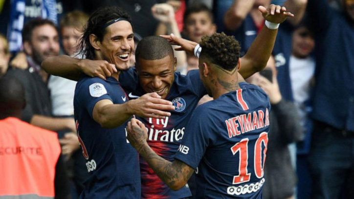

El PSG luce a su ‘MCN’ ante el Angers
El show goleador de la ‘MCN’ tardó cinco jornadas en vivir su primera función en la pasada Ligue 1. En la quinta jornada, en Metz, Emery juntó por primera vez a Mbappé, Cavani y Neymar en el once y los tres ‘mojaron’. Un tridente que se convirtió en innegociable en París marcando los tres de forma conjunta ante Girondins, Rennes, Dijon, Metz, Celtic (dos partidos) y Anderlecht.
Un ataque temible que Tuchel colocó por primera vez en la campaña ante el Angers con una celebración por cabeza. Mbappé, Cavani y Neymar se asociaron y anotaron en el triunfo (3-1) de un PSG que ha arrancado en la Ligue 1 contando sus tres partidos por victoria. La ‘MCN’ ya tiene otra víctima más en su armario.
En un choque irregular, el tridente sostuvo al campeón. Cavani arrancó en Francia como es tradición: marcando. Se deslizó para introducir en boca de gol un centro lateral. La primera que tuvo esta campaña la mandó a la red. También se topó con el palo. Tendrá más ocasiones. Sin embargo, el Angers no se acobardó. El partido no rompió en goleada y sí en el empate visitante. Mangani batió desde los once metros a Areola. Un contratiempo para un PSG que no estaba brillando.Estaban atascados.
Pero apareció Mbappé. El atacante francés brilló en Rusia y ha arrancado el curso como acabó el Mundial. Ante el Guingamp, jugó diez minutos e hizo un doblete. Y frente al Angers, se asoció con Di María para poner el 2-1. Su tercera diana en dos encuentros de Ligue 1. Centro del argentino y volea de Mbappé a la red. Su quinto gol al Angers. Es su rival favorito.
Faltaba Neymar… y el brasileño anotó. Rabiot y Mbappé tocaron… y el francés le regaló a ‘Ney’ el 3-1. El PSG ya tenía el triunfo. Neymar se gustó en el final con sus detalles y los parisinos rozaron el cuarto. Cada miembro de la ‘MCN’ tenía su gol. Un torrente ofensivo en el que Mbappé fue el más destacado. No le echan el lazo. No frenan sus carreras… ni sus goles.